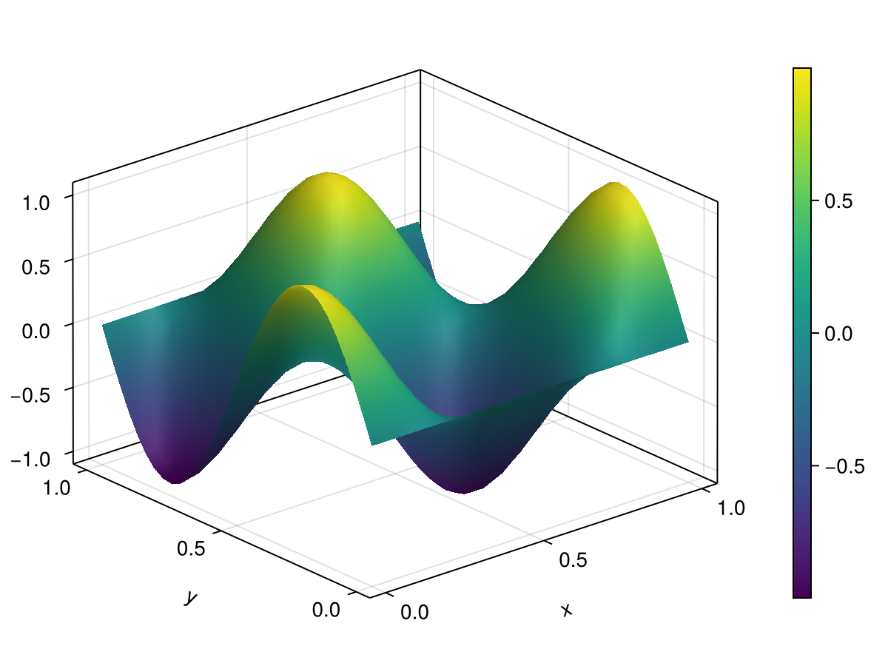
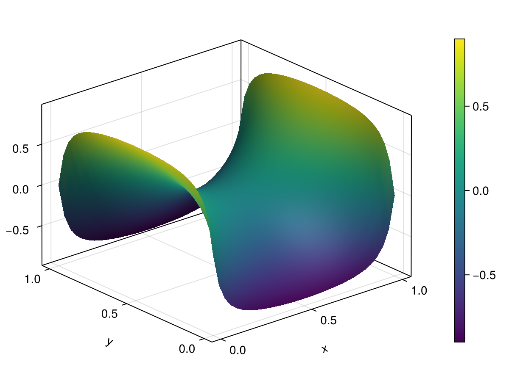

2D Heat Equation
Overview
This is the 2D version of 1D heat equation. It is defined by
\[u_t = \mu (u_{xx} + u_{yy})\]
where $x,y\in[0,L]$ is the temperature and $\mu$ is the thermal diffusivity parameter.
Finite Difference Model
The finite difference approach is similar to the 1D version but with additional complications due to the addition of an extra dimension. If the 2D domain is spatially discretized using $N$ and $M$ grid points for the $x$ and $y$ directions, respectively, then the toeplitz matrices corresponding to each $x$ and $y$ directions are identical to that of the 1D case which is defined by
\[\mathbf{A}_x\in\mathbb{R}^{N\times N} \qquad \text{and} \qquad \mathbf{A}_y\in\mathbb{R}^{M\times M}.\]
However, to construct the matrix for the overall system we utilize the Kronecker product. Define the state vector $\mathbf{z}$ which flattens the 2D grid into a vector then the linear matrix becomes
\[\mathbf{A} = \mathbf{A}_y \otimes \mathbf{I}_{N} + \mathbf{I}_M \otimes \mathbf{A}_x\]
and the $\mathbf{B}$ matrix will be constructed such that they add the inputs to the appropriate indices of the flattened state vector $\mathbf z$.
Thus, we arrive at a $N$-dimensional linear time-invariant (LTI) system:
\[\dot{\mathbf{u}}(t) = \mathbf{A}\mathbf{u}(t) + \mathbf{B}\mathbf{w}(t)\]
We then consider the numerical integration scheme. For our numerical integration we can consider three approaches
- Forward Euler
- Backward Euler
- Crank-Nicolson
Refer to 1D heat equation for details on the numerical integration schemes.
Example
using CairoMakie
using LinearAlgebra
using PolynomialModelReductionDataset: Heat2DModel
using UniqueKronecker: invec
# Setup
Ω = ((0.0, 1.0), (0.0, 1.0))
Nx = 2^5
Ny = 2^5
heat2d = Heat2DModel(
spatial_domain=Ω, time_domain=(0,2),
Δx=(Ω[1][2] + 1/Nx)/Nx, Δy=(Ω[2][2] + 1/Ny)/Ny, Δt=1e-3,
diffusion_coeffs=0.1, BC=(:dirichlet, :dirichlet)
)
xgrid0 = heat2d.yspan' .* ones(heat2d.spatial_dim[1])
ygrid0 = ones(heat2d.spatial_dim[2])' .* heat2d.xspan
ux0 = sin.(2π * xgrid0) .* cos.(2π * ygrid0)
heat2d.IC = vec(ux0) # initial condition
# Boundary condition
Ubc = [1.0, 1.0, -1.0, -1.0]
Ubc = repeat(Ubc, 1, heat2d.time_dim)
# Operators
A, B = heat2d.finite_diff_model(heat2d, heat2d.diffusion_coeffs)
# Integrate
U = heat2d.integrate_model(
heat2d.tspan, heat2d.IC, Ubc; linear_matrix=A, control_matrix=B,
system_input=true, integrator_type=:BackwardEuler
)
U2d = invec.(eachcol(U), heat2d.spatial_dim...)
fig1 = Figure()
ax1 = Axis3(fig1[1, 1], xlabel="x", ylabel="y", zlabel="u(x,y,t)")
sf = surface!(ax1, heat2d.xspan, heat2d.yspan, U2d[1])
Colorbar(fig1[1, 2], sf)
fig1
fig2 = Figure()
ax2 = Axis3(fig2[1, 1], xlabel="x", ylabel="y", zlabel="u(x,y,t)")
sf = surface!(ax2, heat2d.xspan, heat2d.yspan, U2d[end])
Colorbar(fig2[1, 2], sf)
fig2
Fast Solvers (Backward Euler)
As in addition, we also offer a fast implementation of the backward Euler method which utilizes the structure of the linear matrix $\mathbf{A}$ to solve the linear system at each time step more efficiently. This is done by precomputing a solver that exploits the Kronecker product structure of $\mathbf{A}$ and then using this solver to perform the integration. Solver precomputation is done by the build_fast_be_solver function and the integration is done by the integrate_model_fast function. This supports both the Dirichlet and periodic boundary conditions. An example of using the fast solver is as follows.
# Dirichlet
A, B = finite_diff_model(model, μ)
U = ... # boundary inputs, 4 × Tdim
solver = build_fast_be_solver(model, μ) # one-time precompute
state = integrate_model_fast(solver, B, U, model.tspan, model.IC)
# Periodic (no boundary inputs)
state = integrate_model_fast(model, μ, model.tspan, model.IC)API
PolynomialModelReductionDataset.Heat2D.Heat2DModel — Type
mutable struct Heat2DModel <: AbstractModel2 Dimensional Heat Equation Model
\[\frac{\partial u}{\partial t} = \mu\left(\frac{\partial^2 u}{\partial x^2} + \frac{\partial^2 u}{\partial y^2}\right)\]
Fields
spatial_domain::Tuple{Tuple{<:Real,<:Real}, Tuple{<:Real,<:Real}}: spatial domain (x, y)time_domain::Tuple{Real,Real}: temporal domainparam_domain::Tuple{Real,Real}: parameter domainΔx::Real: spatial grid size (x-axis)Δy::Real: spatial grid size (y-axis)Δt::Real: temporal step sizespatial_dim::Tuple{Int64,Int64}: spatial dimension x and ytime_dim::Int64: temporal dimensionparam_dim::Int64: parameter dimensionBC::Tuple{Symbol,Symbol}: boundary conditionIC::Array{Float64}: initial conditiondiffusion_coeffs::Union{AbstractArray{<:Real},Real}: diffusion coefficientsxspan::Vector{Float64}: spatial grid points (x-axis)yspan::Vector{Float64}: spatial grid points (y-axis)tspan::Vector{Float64}: temporal pointsfinite_diff_model::Function: finite difference modelintegrate_model::Function: integrate model
PolynomialModelReductionDataset.Heat2D.FastDirichletSolver — Type
struct FastDirichletSolver <: PolynomialModelReductionDataset.Heat2D.AbstractFastBESolverFast backward Euler solver for the 2D heat equation with Dirichlet BCs, using fast diagonalization of the Kronecker-sum operator.
Built once for a given (Nx, Ny, Δx, Δy, μ, Δt). All allocations happen at construction; subsequent solves are allocation-free.
PolynomialModelReductionDataset.Heat2D.FastPeriodicSolver — Type
struct FastPeriodicSolver{P, IP} <: PolynomialModelReductionDataset.Heat2D.AbstractFastBESolverFast backward Euler solver for the 2D heat equation with periodic BCs, using FFT diagonalization of the circulant Laplacians.
PolynomialModelReductionDataset.Heat2D.FastDenseSolver — Type
struct FastDenseSolver <: PolynomialModelReductionDataset.Heat2D.AbstractFastBESolverFast backward Euler solver for a dense, unstructured matrix A (typically from a reduced-order model). Precomputes (I - Δt A)⁻¹ via eigendecomposition so that each time step is a single dense matrix-vector multiply.
Fields
M_inv::Matrix{Float64}: Precomputed (I - Δt A)⁻¹, real r×r matrix applied via mul! each stepV::Matrix{ComplexF64}: Eigenvectors of A (complex, stored for update_timestep!)Vinv::Matrix{ComplexF64}: Inverse of V (complex)λ::Vector{ComplexF64}: Eigenvalues of A (complex)r::Int64: Dimension of the systemeigen_based::Bool: Whether the solver was constructed via eigendecomposition (false = LU fallback)
PolynomialModelReductionDataset.Heat2D.build_fast_be_solver — Function
build_fast_be_solver(model, μ)
build_fast_be_solver(model, μ, Δt)
Build the appropriate fast backward Euler solver for model. Currently supports (:dirichlet, :dirichlet) and (:periodic, :periodic) BCs.
PolynomialModelReductionDataset.Heat2D.integrate_model_fast — Function
integrate_model_fast(solver, B, U, tdata, IC)
Fast backward Euler integrator. Same signature as the original integrate_model(A, B, U, tdata, IC) except it takes a precomputed solver::AbstractFastBESolver in place of the assembled matrix A. Pass B and U as empty matrices (or skip the entries) when there are no boundary inputs (e.g. periodic BCs).
Assumes a uniform time step (tdata[i] - tdata[i-1] constant) matching the Δt used when the solver was built.
integrate_model_fast(solver, tdata, u0, B, input)
Integrate a reduced-order system du/dt = A u + B f using backward Euler with a precomputed FastDenseSolver.
Arguments
solver::FastDenseSolver: precomputed solver (fromFastDenseSolver(A, Δt))tdata::AbstractVector: time points (uniform spacing must match solver Δt)u0::AbstractVector: initial condition (length r)B::AbstractMatrix: input matrix (r × m); passzeros(r,0)if no inputinput::AbstractMatrix: input signals (m × Tdim); passzeros(0,Tdim)if no input
Returns
u::Matrix{Float64}: state trajectory (r × Tdim)
PolynomialModelReductionDataset.Heat2D — Module
2D Heat Equation ModelPolynomialModelReductionDataset.Heat2D.backward_euler_solve! — Method
backward_euler_solve!(unew, F, rhs)
In-place backward Euler step for a dense unstructured system. Applies the precomputed M_inv as a single matrix-vector multiply.
PolynomialModelReductionDataset.Heat2D.backward_euler_solve! — Method
backward_euler_solve!(unew, F, rhs)
In-place backward Euler step: solves (I - Δt*A) * unew = rhs and writes the result into unew. The Δt baked into F must match the time step used to construct it.
PolynomialModelReductionDataset.Heat2D.build_fast_be_solver — Function
build_fast_be_solver(model, μ)
build_fast_be_solver(model, μ, Δt)
Build the appropriate fast backward Euler solver for model. Currently supports (:dirichlet, :dirichlet) and (:periodic, :periodic) BCs.
PolynomialModelReductionDataset.Heat2D.integrate_model_fast — Method
integrate_model_fast(solver, B, U, tdata, IC)
Fast backward Euler integrator. Same signature as the original integrate_model(A, B, U, tdata, IC) except it takes a precomputed solver::AbstractFastBESolver in place of the assembled matrix A. Pass B and U as empty matrices (or skip the entries) when there are no boundary inputs (e.g. periodic BCs).
Assumes a uniform time step (tdata[i] - tdata[i-1] constant) matching the Δt used when the solver was built.
PolynomialModelReductionDataset.Heat2D.integrate_model_fast — Method
integrate_model_fast(solver, tdata, u0, B, input)
Integrate a reduced-order system du/dt = A u + B f using backward Euler with a precomputed FastDenseSolver.
Arguments
solver::FastDenseSolver: precomputed solver (fromFastDenseSolver(A, Δt))tdata::AbstractVector: time points (uniform spacing must match solver Δt)u0::AbstractVector: initial condition (length r)B::AbstractMatrix: input matrix (r × m); passzeros(r,0)if no inputinput::AbstractMatrix: input signals (m × Tdim); passzeros(0,Tdim)if no input
Returns
u::Matrix{Float64}: state trajectory (r × Tdim)
PolynomialModelReductionDataset.Heat2D.update_timestep! — Method
update_timestep!(solver, Δt_new)
Rebuild M_inv for a new time step Δt_new without repeating the eigendecomposition of A. Cost: O(r²).
If the solver was constructed via the LU fallback (nearly defective A), this recomputes inv(I - Δt_new A) from the stored eigendecomposition anyway, which may be inaccurate; a warning is issued.